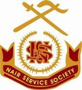

NSS TALUK UNION, KOLLAM.

ABOUT US
The Nair Service Society is an organization created for the social advancement and welfare of the nair community, established under the leadership of Sree Mannathu Padmanabhan .The NSS has evolved into a well knit and coherent organization that has never swered from the noble ideals and high principles of the founder. The NSS runs more than a hundred schools ,number of arts and science colleges, engineering college , Homeo medical college ,several nursing colleges, Polytechnic College , TTC Schools, Working Women’s hostels and Technical Institutions. NSS has extended the benefits of its service beyond communal and religious boundaries and has been playing a significant role in the social, economic and political transformations of the state .
P.KRISHNA PILLAI MEMORIAL NSS COMPUTER COLLEGE, ANANDAVALLEESWARAM
A Private Industrial Training Institute affiliated to National Council for Vocational Training was started in the year 2001.
TRADE : COMPUTER OPERATOR &PROGRAMMING ASSISTANT (NSQF LEVEL 4)
To fulfill the increasing Industrial and engineering requirements of our country and to create opportunities for employment, trainings are been provided by several institutions. Among those institutions the most prominent one is “Industrial Training Institute (ITI)”. This institution provides theoretical and practical training of various trades such as Computer Operator and Programming Assistant (COPA),Computer Hardware and Net work maintenance ,Information and Communication Technology and System Maintenance etc. Computer Operator and Programming Assistant is the major trade. The need of this trade is always be there in computer industry , workshops, government offices and cyber cafes etc.
Duration : 1 Year
Seats : 52
Time
Shift 1 : 8 am to 3 pm
Shift 2 : 10 am to 5 pm
Subjects : Trade Theory, Trade Practical, Employability Skills
CONTENTS
Computer Components and Windows Operating System
Computer Hardware Basics and Software Installation
Dos CLI and Linux Operating System
Word Processing Software
Spreadsheet Applications
Open Office
DBMS
Configuring and using Networks
Internet Concepts
Designing Static Web Page
JavaScript
Programming with VBA
Tally
E-Commerce
For more Information: 9496847859
MMNSS COLLEGE, ANANDAVALLEESWARAM
A study Center of University of Kerala was started in the year 2013 in the memory of its great founder Sri. Mannathu Padmanabhan. The aim of the College is to impart quality education to students in various disciplines and mould them into good citizens The institution with its committed teachers provides quality education through effective Curriculum transaction , talent search, and overall development of a student.
COURSES
BA (English& History)
BCom(Co-Operation,Finance &Computer Application)
For more Information: 9567906777
MANAGER
DR. G. GOPAKUMAR
NSS UNION PRESIDENT
KOLLAM TALUK NSS UNION
ANANDAVALLEESWARAM
UPDATING IN PROCESS..